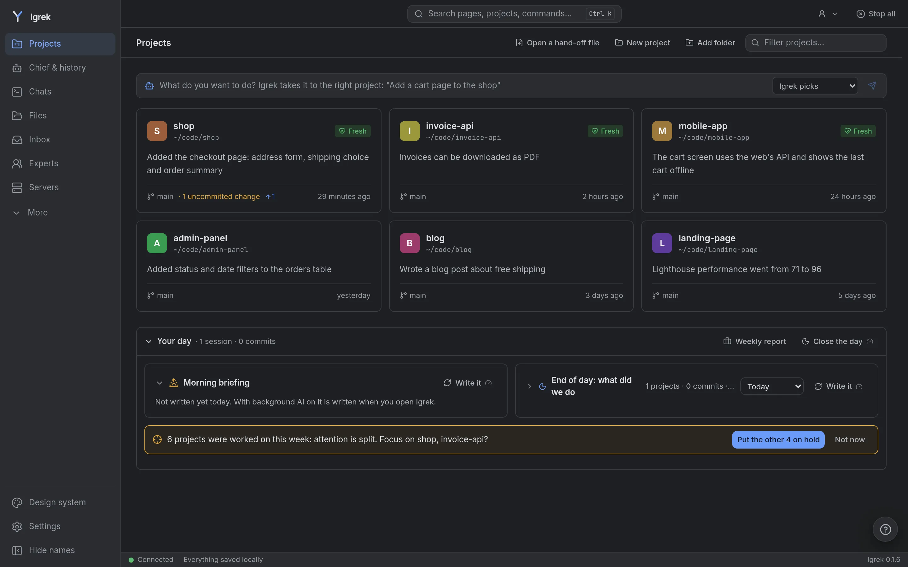

Igrek docs
Everything to install Igrek, start your first task and know what it does with your data.

Install
The desktop app
Download the package for your computer from the latest release: .msi for Windows, .dmg for macOS (aarch64 for Apple silicon, x64 for Intel), an AppImage or .deb for Linux. Each is about 17 MB (the AppImage carries its own WebKit and is larger).
The packages are not signed with a paid certificate, so the system asks once:
- Windows: "Windows protected your PC". Click More info, then Run anyway.
- macOS: "Igrek cannot be opened". Close it, open System Settings, Privacy & Security, scroll down and click Open Anyway.
- Linux (AppImage): make it executable (
chmod +x Igrek_*.AppImage), then open it. Some systems needlibfuse2first.
Claude Code or Codex is not inside: on the first start Igrek checks for them and installs one in a click if you like. Sign in to it once.
From a terminal
Linux and macOS:
curl -fsSL https://raw.githubusercontent.com/Mohamedattiadev/igrek/main/scripts/install.sh | shWindows (PowerShell). Install Git for Windows first; Claude Code uses its bash.
irm https://raw.githubusercontent.com/Mohamedattiadev/igrek/main/scripts/install.ps1 | iexWith Docker
git clone https://github.com/Mohamedattiadev/igrek.git && cd igrek
docker compose up -dThen open http://localhost:7777.
First start
Pick your language, say whether you write code, then add your project folders: one project, or a folder that holds several. Igrek shows only the folders you add; the ones Claude already worked in are one click away.
- Simple (you do not write code): a project shows its overview, chats and files, in plain words.
- Developer: code, board, health, setup and tools too. Settings, Mode changes it any time; nothing is removed either way.
Start a task
The What do you want to do? box on the home page is the place to start. Leave it on Igrek picks and the chief, who knows every project, hands the work to the right one; pick a project yourself; or pick Several projects to send one task to many, each in its own copy, side by side.
A task for a project gets a way of working for its kind: a bug is reproduced before it is fixed, a slowness measured before and after, a refactor keeps the behaviour, a feature starts with its data and its smallest version. The box says which one; leave out sends your text as written.
Inside a project, New chat starts a chat; its arrow has terminals (Claude Code, Codex, a shell) and your other accounts.
Chats
The box has what each message needs: text, pictures, saved prompts and experts. Approval mode, model and detail are under Chat settings. Above the box: the agent's plan, the chat's to-do list and the files the chat changed, with a diff and one-click undo.
The header shows what the last turn took of your 5-hour limit, and before you send, what a message here usually takes and what is left. Anything that asks a model has a small mark.
Why?
Every changed file has a Why? button: the request that led to the change, the plan step it belongs to and the expert asked in the same turn. It is read from the chat itself; nothing is guessed.
Health and Fix
The Health tab scores architecture, security, tests, documentation, dependencies and more, and lists what to improve. Fix runs a known command for the simple ones (a missing lockfile, an .env file in git), shown before it runs; the others are done by the part's expert in its own copy, which you review before anything is merged. Before merging, Igrek shows the files and tests that use what changed.
Experts
About thirty experts, from security and databases to product and finance, each with its field's standards and numbers. Call one with @ in a chat, ask all of them about a project, or turn on expert review of sensitive changes. Each review is one model call, so it is off by default. Experts can be shared as packs.
Memory
Decisions, conventions and mistakes are kept per project and put in front of the AI at the start of each chat. Claude Code reads CLAUDE.md and Codex reads AGENTS.md; the Memory tab shows rules only one of them has and joins them, so both agents follow the same.
Browser extension
For Chrome, Brave and Edge. It fills forms with your private details without the AI seeing them, writes a field's text, and acts on a page with you: ask about the page or an element you pick, and let it propose up to five steps (click, type, choose). Each step is outlined on the page and done only when you click Do it; one that sends, pays or deletes asks twice, and password fields are never typed into.
To connect it, press Connect in its panel and Allow in Igrek when the same code shows in both.
Privacy
Everything runs on your computer. No telemetry, no paid API; every address Igrek opens on the internet is listed in Settings. Your saved private details and your projects' .env secrets become placeholders such as [[private:iban]] before a message leaves, and the real values are put back on your side. Salaries, IBANs, card and ID numbers are recognised by their shape too.
When a file the AI reads tells AI tools not to help (a homework rule, a policy), Igrek shows you the line once and you decide whether it goes on. Nothing is hidden from the model.
Team
An optional hub, on a server you run, shares the projects you choose end-to-end encrypted. Everyone uses their own AI account; accounts are never shared. Setting up a hub is in the README.
Move to another computer
Settings, Move to another computer: one file, locked with a password, carries everything Igrek keeps. Open it in Igrek on the other computer and restart. AI logins are not in it; sign in again there.
Update and remove
The desktop app looks for a new version when it opens and once a day, and installs it after you agree. From a terminal install, run the install command again.
To remove Igrek, uninstall the app (or delete the AppImage), and delete its data in ~/.igrek and its runtime in ~/.local/share/igrek-runtime (Windows: %LOCALAPPDATA%\igrek-runtime). Security issues: SECURITY.md.